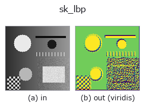

texture op• Data kinds: image → image
• Call: fullseye.apply(img, "sk_lbp", a=0.5, b=0.5) (2-D model = एक image + दो scalar knobs a,b∈[0,1])

*Figure synthetic 128×128 input पर सच में चलाकर मिला output है। बाईं ओर input, दाईं ओर output। Point clouds ऊपर से देखे गए scatter के रूप में (brightness = z), 1-D series line के रूप में, volumes z दिशा में maximum-intensity projection के रूप में, videos बीच के frame के रूप में, complex images amplitude के रूप में, और जो return values चित्र नहीं बन सकते वे स्वयं values के रूप में दिखाए जाते हैं।*
*Output viridis जैसे pseudo-colour में है (गहरा बैंगनी = कम, पीला = अधिक), ताकि distance, phase, orientation, depth जैसे "मात्राओं के field" पढ़े जा सकें।*
Knob a को बदलकर (0.1 / 0.5 / 0.9, दूसरा knob default पर):
▸ sk_lbp: knob a को बदलने का figure (docs site)
Knob b को बदलकर (0.1 / 0.5 / 0.9, दूसरा knob default पर):
▸ sk_lbp: knob b को बदलने का figure (docs site)
दूसरी images पर भी (synthetic scene / photo / coins। ऊपर की row में inputs, नीचे की row में उनके outputs। Knobs default पर):
▸ sk_lbp: दूसरी images पर output (docs site)
*चौथा column colour (H,W,3) input है। यह op channels को पार किए बिना colour संभालता है (colour channel को तीसरे spatial axis की तरह convolve नहीं करता)।*
LBP (Local Binary Pattern)। हर pixel को केंद्र मानकर वृत्त पर स्थित पड़ोसी pixels से तुलना (बड़ा/छोटा) करके binary (आधार 2) code बनाने वाला texture descriptor, जो रोशनी के बदलाव से कम प्रभावित होता है।
> नीचे का विस्तृत विवरण मूल text में है — सारांश और headings का अनुवाद हो चुका है।
HALCON に直接対応するものは無い。実装は feature.local_binary_pattern(v, 8, 1+int(a*3)) を正規化したもの —— 近傍点数 P=8 は固定、a は半径 R を 1〜4 に振る(半径が大きいほど粗いスケールのテクスチャを拾う)。★b は符号化 method を選ぶ ―― b<0.60 で 'default'(既定。回転不変ではない)、<0.75 で 'ror'、<0.90 で 'uniform'、それ以上で 'nri_uniform'。
実写のテクスチャで測ると、回転不変な符号化にしても異方な素材は救えない ―― brick / grass / gravel で、回転による自分自身からのずれを素材間の最小距離で割った比は 'default' で 9.64 / 0.17 / 0.19、'uniform' で 1.72 / 0.02 / 0.01。等方な 2 つは 10 倍良くなるのに、brick は 1 を割らない(回した自分より別の素材のほうが近い)。LBP の回転不変性は局所パターンの巡回に対するもので、素材そのものの向きの分布は消せないため。詳細 = examples/poc_real_texture_invariance.py。
Values की तुलना (मापा गया): output को उसी image के अधिकतम से normalise किया गया है (output का अधिकतम हमेशा 1.0 होता है, और input को किसी constant से गुणा करने पर भी output नहीं बदलता)। इसलिए अलग-अलग images के values की तुलना नहीं की जा सकती — समान ताकत वाले feature का value भी इस पर निर्भर करता है कि उस image में सबसे मज़बूत feature कौन-सा है। केवल कमज़ोर features वाली image में noise 1.0 तक उठ जाता है। images के बीच तुलना करनी हो तो किसी साझा reference से फिर से भाग दें।
खाली frame (मापा गया): एक समान brightness वाली image देने पर brightness चाहे जो हो, सभी pixels foreground (1) बन जाते हैं। जिस frame में रोशनी उड़ गई हो, कुछ रास्ते में आ गया हो, या कोई subject न हो, वह "100% defective" के रूप में लौटता है, इसलिए upstream में ही जाँचें कि frame एक समान है या नहीं और ऐसे frames को हटा दें।
• gallery2d_texture_freq family guide
• Sample data catalog (DL URL / license) — 2-D के लिए skimage.data (BSD/public) + synthetic, 3-D के लिए real data sources (Stanford/PDS आदि) के DL URL।
• Operators का स्रोत और संदर्भ — इस op family के मूल research/methods के स्रोत।
• Algorithm का मानक स्रोत (लेखक, वर्ष) और उपयोग ऊपर की family usage guide में दिए गए हैं।
नीचे का program सच में चलता है, यह जाँचा गया है (figure वाला ही input)। Studio की help में यह block buttons बन जाता है, जिनसे इसे वहीं load करके चलाया जा सकता है।
sk_lbp 0.50 0.50
▸ यह pipeline load करें · Load करके चलाएँ
• gallery2d_texture_freq — py -3.11 examples/gallery2d_texture_freq.py
• poc_real_texture_invariance — py -3.11 examples/poc_real_texture_invariance.py
image को input के रूप में लेते हैं)identity · gaussian · mean_box · bilateral · unsharp · median · min_filter · max_filter
texture)std_filter · local_bimodality · local_std · scale_select_std · bootstrap_std_error · structure_tensor_orientation · structure_tensor_coherence · gabor
*Provenance: ops.py — 2D operator registry. यह per-op note tools/opdocs.py md से अपने-आप generate होता है (हाथ से edit न करें)।*
© 2026 Kazufumi Furuse — Fullseye operator documentation. Licensed under Apache-2.0.